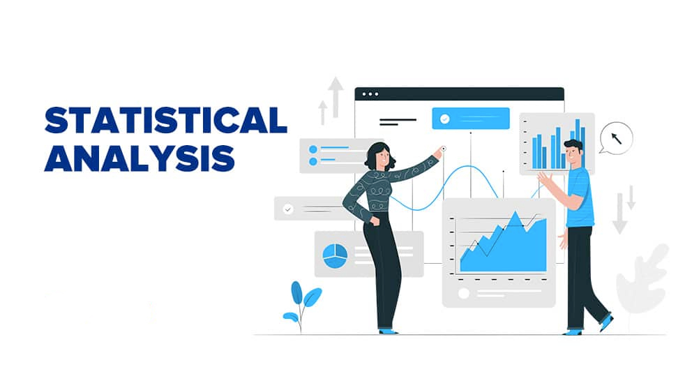

.jpeg)
Developed an AI-powered chatbot leveraging Vicuna and OpenHermes models, optimized for cryptocurrency education through domain-specific fine-tuning and Retrieval-Augmented Generation (RAG).
Ensured high-performance delivery with advanced prompt engineering, offline deployment, and robust evaluation using metrics like BERT, ROUGE, and BLEU, showcasing expertise in cutting-edge LLM technologies.

Developed a predictive analytics solution for the US real estate market, leveraging a dataset of 10,000 property listings with 46 attributes. Conducted extensive ML MODEL comparisons, including Linear Regression, Neural Networks, Bootstrap Forest, Boosted Trees, and KNN, to forecast property prices.
The Bootstrap Forest model outperformed others with an R-Square of 0.281 on the test set, delivering actionable insights for stakeholders by decoding key price-influencing factors and market dynamics.

Using Web Analytics, optimized Google Ad strategies for University of Connecticut's MS program using A/B testing to compare "Analytics-Focused" and "Project Management-Focused" ads.
Leveraged hypothesis testing (null and alternative) to analyze click-through rates, revealing that analytics-focused ads boosted international engagement. Demonstrated expertise in data-driven marketing, statistical analysis, and ad content optimization..

Using Text Mining, conducted sentiment analysis on Yelp reviews to understand customer perspectives on restaurants, focusing on service, ambiance, and food. Preprocessed text data using tokenization, stop-word removal, lemmatization, and stemming, followed by exploratory data analysis to uncover sentiment trends and key features influencing ratings.
Applied supervised and unsupervised learning models in Python and SAS, achieving ~60% accuracy in rating predictions, and utilized (Natural Laguage Processing) NLP techniques to extract actionable insights for restaurant improvement.

Developed a time-series forecasting model to predict weekly sales for Walmart stores using ARIMA, ARIMAX, and Exponential Smoothing Models (ESM) in SAS. Conducted detailed exploratory analysis across 45 store datasets to capture nuanced sales patterns, segmenting stores into distinct trends: negative, positive, constant, and irregular.
Applied pre-whitening and cross-correlation techniques to identify key variables influencing sales, ensuring model accuracy and parsimony. The findings informed strategic decisions on inventory management, staffing, and supply chain optimization, showcasing the potential of predictive analytics for retail efficiency and profitability.

Utilized R to analyze user engagement and property attractiveness for HomeZilla, a real estate listing platform. Conducted data preprocessing by addressing outliers, computing z-scores, and normalizing variables.
Developed regression models to predict house prices based on property attributes and logistic regression models to analyze photo attractiveness using variables like "Time Viewed" and abandonment behavior. Applied z-score analysis, QQ-plots, and backward stepwise regression to extract actionable insights.

Noticed your grocery bills creeping up? So did I! Using Tableau and U.S. CPI data on food prices (June 2024), I found some interesting trends

Designed and implemented a database management project using SQL to analyze employee data and deliver actionable insights. This project involved building a comprehensive employee database and applying advanced SQL queries to generate key reports.
The Exit Analysis linked employee exit reasons to factors such as salaries, satisfaction, and offsite activities, helping identify drivers of turnover. A Gender Equity Report highlighted disparities in salary and satisfaction across genders, offering data-driven recommendations to promote workplace equity.